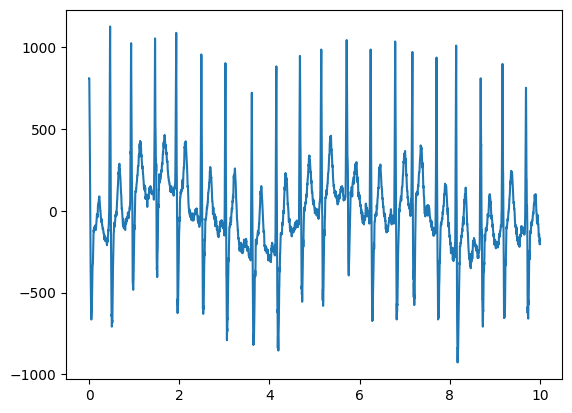
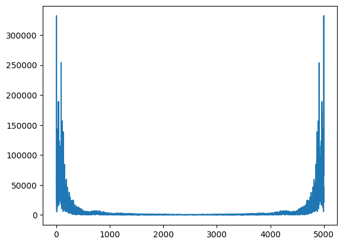
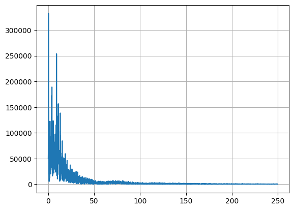
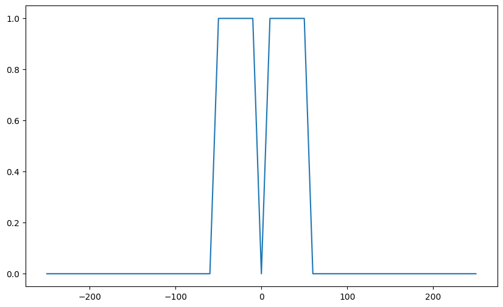
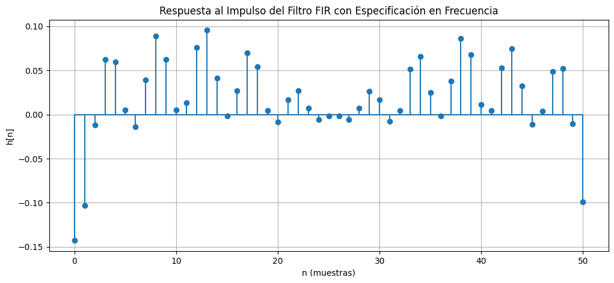
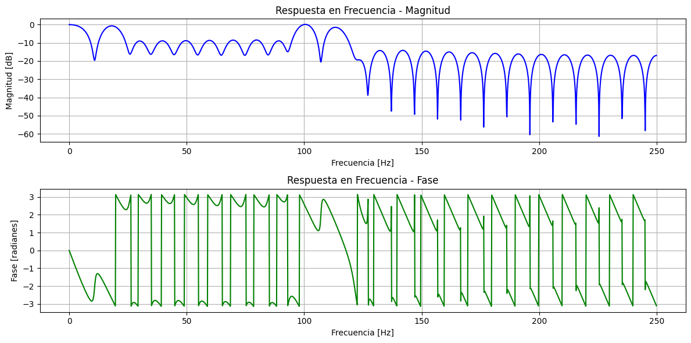
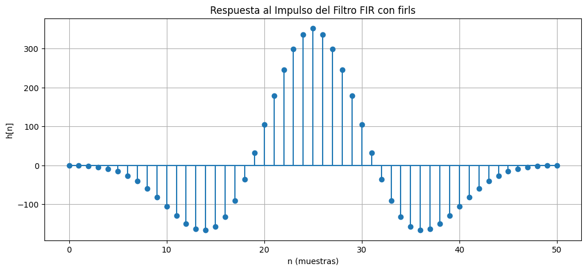
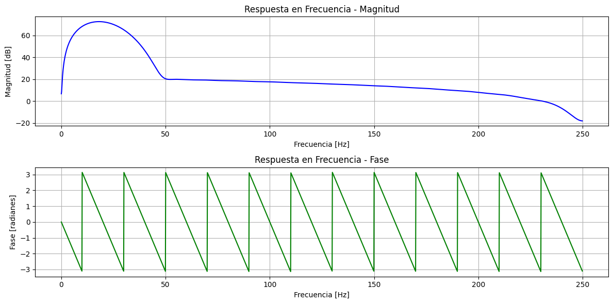

#from google.colab import drive
#drive.mount('/content/drive')Estudio de arritmia cardíaca
Carga de librerías
- numpy: Para manipulación numérica y funciones estadísticas básicas
- matplotlib.pyplot: Para generación de gráficos.
- scipy.io: Para carga de datos provenientes de archivos .mat
import numpy as np
import matplotlib.pyplot as plt
import scipy.io as sio
import scipy.signal as sigConfiguración de carpetas
# data_path = "/content/drive/MyDrive/ECG_Dataset/"#Datapath de colab
data_path = "../../data/"Carga de datos
data = sio.loadmat(data_path+"JS00001.mat")print(type(data))<class 'dict'>print(data.keys())dict_keys(['val'])print(type(data["val"]))<class 'numpy.ndarray'>print(data["val"].shape)(12, 5000)lead_10 = data["val"][9, :]t0 = 0
tf = 10
t = np.linspace(t0, tf, 5000)fig01 = plt.figure()
plt.plot(t,lead_10)
ecg_fft = np.fft.fft(lead_10)
ecg_fftarray([ -50343. +0.j ,
-44427.87292792 -48118.33430899j,
-14003.60280291-331886.8477886j , ...,
-134619.87742102 -46991.97629606j,
-14003.60280291+331886.8477886j ,
-44427.87292792 +48118.33430899j])mag_ecg_fft = np.abs(ecg_fft)
f_vect = np.fft.fftfreq(len(mag_ecg_fft))plt.plot(mag_ecg_fft)
N = len(mag_ecg_fft)
f_vect1 = 500*f_vect[:np.uint(N/2)]
mag_ecg_fft1 = mag_ecg_fft[:np.uint(N/2)]plt.plot(f_vect1, mag_ecg_fft1)
plt.grid()
fs = 500
fc1 = 0.5
fc2 = 50
order_fir = 51import numpy as np
import matplotlib.pyplot as plt
from scipy.signal import freqz, windows
# Definir el vector de frecuencias
f_vect = np.linspace(-fs//2, fs//2, order_fir)
# Definir la respuesta en frecuencia deseada
H1 = np.zeros(len(f_vect))
H1[(((f_vect >= 0.5) & (f_vect <= 50)) | ((f_vect <= -0.5) & (f_vect >= -50)))] = 1 # Banda de paso entre 0.5 y 50 Hz
plt.figure(figsize=(10,6))
plt.plot(f_vect, H1)
# Normalizar las frecuencias con respecto a Nyquist (fs/2)
normalized_frequencies = f_vect / (fs / 2)
# Interpolación de la respuesta deseada
H_interp = np.interp(np.linspace(0, 1, order_fir), normalized_frequencies, H1)
# Transformada Inversa de Fourier para obtener la respuesta al impulso
h = np.fft.ifft(H_interp, order_fir).real # Solo tomamos la parte real
# Aplicar ventana de Hamming
window = windows.hamming(order_fir)
h_windowed = h * window
# Normalizar la energía del filtro
h_windowed /= np.sum(h_windowed)
# Calcular la respuesta en frecuencia
w, H_fir = freqz(h_windowed, worN=2048, fs=fs)
# Graficar la respuesta al impulso
plt.figure(figsize=(12, 5))
plt.stem(h_windowed, basefmt="C0")
plt.title("Respuesta al Impulso del Filtro FIR con Especificación en Frecuencia")
plt.xlabel("n (muestras)")
plt.ylabel("h[n]")
plt.grid()
plt.show()
# Graficar la respuesta en frecuencia
plt.figure(figsize=(12, 6))
plt.subplot(2, 1, 1)
plt.plot(w, 20 * np.log10(abs(H_fir)), "b")
plt.title("Respuesta en Frecuencia - Magnitud")
plt.xlabel("Frecuencia [Hz]")
plt.ylabel("Magnitud [dB]")
plt.grid()
plt.subplot(2, 1, 2)
plt.plot(w, np.angle(H_fir), "g")
plt.title("Respuesta en Frecuencia - Fase")
plt.xlabel("Frecuencia [Hz]")
plt.ylabel("Fase [radianes]")
plt.grid()
plt.tight_layout()
plt.show()


import numpy as np
import matplotlib.pyplot as plt
from scipy.signal import firls, freqz
# Parámetros del filtro
fs = 500 # Frecuencia de muestreo en Hz
N = 51 # Número de coeficientes del filtro (impar para centrar en cero)
# Definir las bandas y la respuesta deseada
bands = [0, 0.5, 50, fs / 2] # Frecuencias en Hz
desired = [0, 10, 10, 0] # Pasa-banda de 0.5 Hz a 50 Hz
# Diseñar el filtro FIR con firls
h_firls = firls(N, bands, desired, fs=fs)
# Calcular la respuesta en frecuencia
w, H_fir = freqz(h_firls, worN=2048, fs=fs)
# Graficar la respuesta al impulso
plt.figure(figsize=(12, 5))
plt.stem(h_firls, basefmt="C0")
plt.title("Respuesta al Impulso del Filtro FIR con firls")
plt.xlabel("n (muestras)")
plt.ylabel("h[n]")
plt.grid()
plt.show()
# Graficar la respuesta en frecuencia
plt.figure(figsize=(12, 6))
plt.subplot(2, 1, 1)
plt.plot(w, 20 * np.log10(abs(H_fir)), "b")
plt.title("Respuesta en Frecuencia - Magnitud")
plt.xlabel("Frecuencia [Hz]")
plt.ylabel("Magnitud [dB]")
plt.grid()
plt.subplot(2, 1, 2)
plt.plot(w, np.angle(H_fir), "g")
plt.title("Respuesta en Frecuencia - Fase")
plt.xlabel("Frecuencia [Hz]")
plt.ylabel("Fase [radianes]")
plt.grid()
plt.tight_layout()
plt.show()
